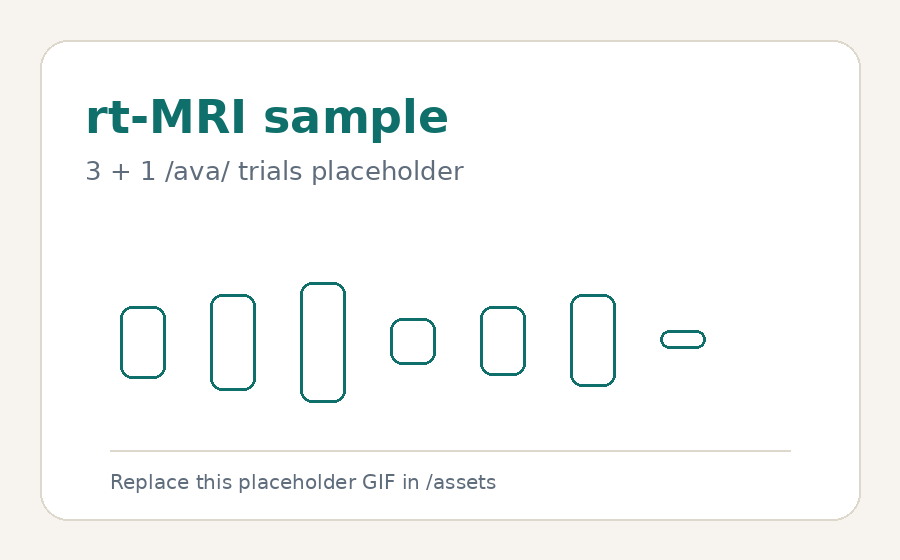
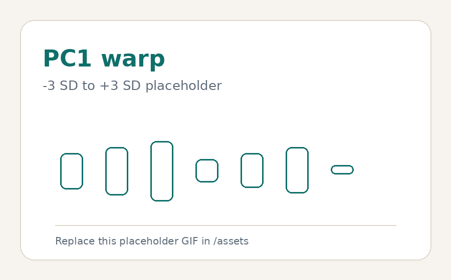
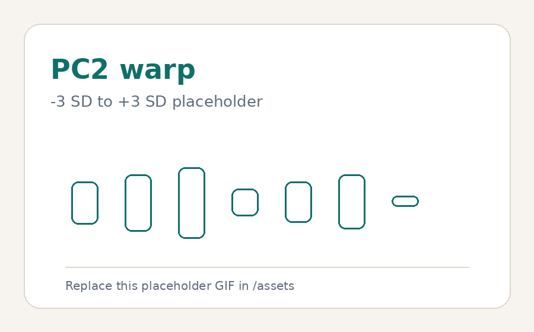

The protruded jaw setting and labiodental /v/
Supplementary animations and notes for the poster The Influence of the Protruded Jaw Setting on the Labiodental Fricative /v/.
Summary
This poster examines how a protruded jaw setting (PJAW) affects the articulation of /v/ in Singapore English. In rt-MRI data, some PJAW productions shifted from labiodental articulation (lower lip–upper teeth) to dentolabial articulation (upper lip–lower teeth), while others remained labiodental.
The animations below supplement the poster by showing example rt-MRI productions and PCA-based reconstructions of lip-shape variation.
rt-MRI sample

PC1 warp

PC2 warp

Notes for reading the materials
rt-MRI sample
The sample GIF shows one speaker producing the repeated /ava/ trials. Teeth are not directly visible in MRI, so their positions are inferred from signal voids and surrounding anatomy.
PCA warps
The PC1 and PC2 GIFs are reconstructions from the lip ROI, not recordings of actual speakers. They show how the lip-region image changes from −3 SD to +3 SD along each principal component.
LD/DL interpretation
LD refers to lower lip–upper teeth constriction; DL refers to upper lip–lower teeth constriction. The PCA and jaw-position analyses are used together because lip-shape patterning alone does not fully explain why some PJAW tokens remain LD while others shift to DL.
Plot guide
Any diagonal line in the PCA scatterplot should be treated as a visual guide only. The interpretation comes from the PC1–PC2 distribution and the warp analysis.
Scope
Acoustic analysis was not included because the MRI scanner environment is noisy. The focus here is articulatory: how a long-term jaw setting can interact with active segmental articulation.
Further details
The thesis page gives the fuller account of frame selection, ROI extraction, PCA, regression, jaw-position analysis, and limitations.